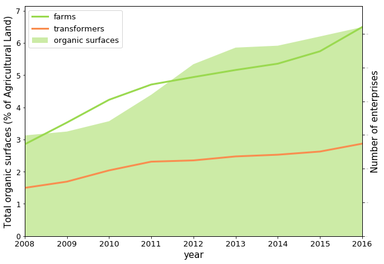
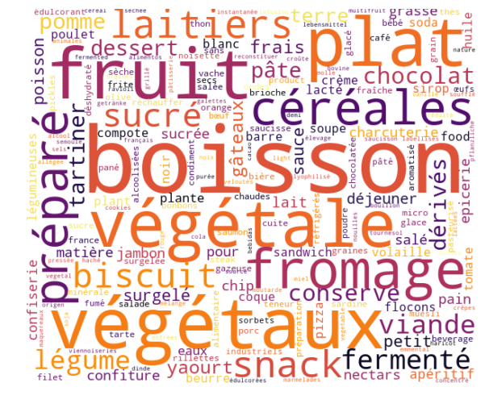
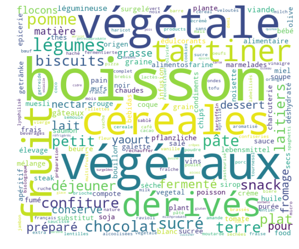
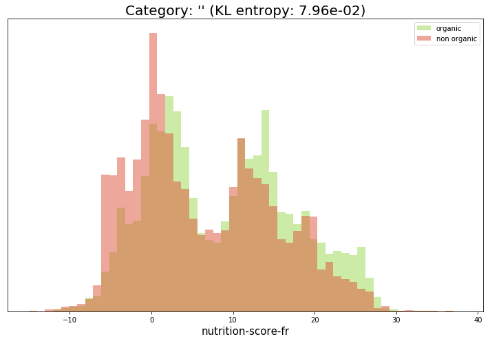
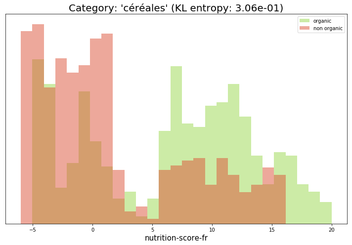
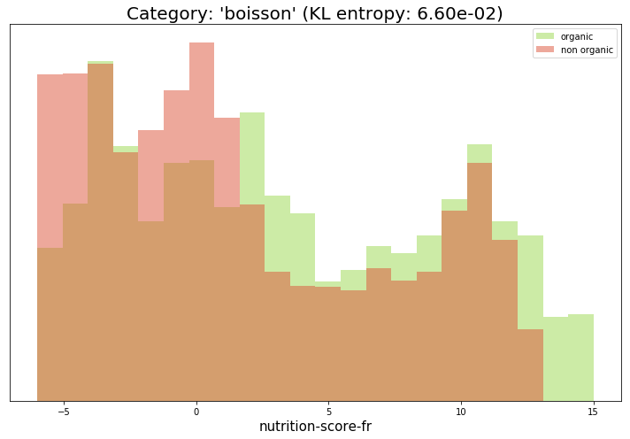

Organic food
Organic food history
Organic food is a trend that originated a few years ago as a response to chemical fertilizers and pesticides. For a few years now, those chemical products are for a great part supposed to have heavy and disastrous repercussions on health, as well for consumers as for producers.

Evolution of organic fields proportion.
Organic food has encountered two different wide expansion phases:
- One in the late 90s
- One in the 2010s
Organic food appears through many advertising campaigns and in many minds to be healthy food, almost miracle food. But how is it really?
Products
What are the main differences between organic and non-organic food?

Non organic product categories

Organic product categories
On these word clouds, it appears that both organic and non-organic food cover a large panel of products and don't seem to have a fundamentally different offer from each other. The only notable fact is that non-organic food seems to favor prepared meals. On the other hand, organic food seems to have a very wide offer for spread, probably in order to counter some well known trademark.
Nutriscore
In order to compare the healthiness of organic food in comparison to non-organic one, we use a indicator aggregating values for different nutrients: the
nutriscore.
Overview

Comparison of nutriscores for organic and non organic products.
Special cases
After seeing the overall distribution of nutriscores among organic and no-organic products, we aim at comparing them for specific categories of product. That way, we might see some differences at a more local scale that are invisible at a global scale.

Comparison of nutriscores for organic and non organic products.

Comparison of nutriscores for organic and non organic products.
Conclusion
Organic food is not consistently healthier than non organic one on the sole consideration of nutrients. Most of organic products just contain as much energy, sugars, fats as their non-organic counterparts. However, the organic label does not take into account at all the nutriscore or the nutritional values of a product. It only takes into account the fact that a product was produced with our without pesticides and some controversial chemical substances. Some myth around organic food being the panacea might simply be an extrapolation of the value of that label. Organic food might be healthier because it contains less chemical substances, but not because it contains healthier nutrients. In addition, one might think that this trend has been enhanced by advertising campaigns